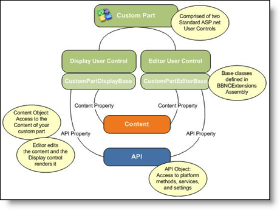
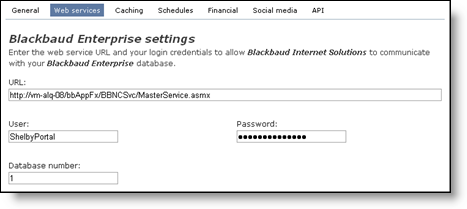
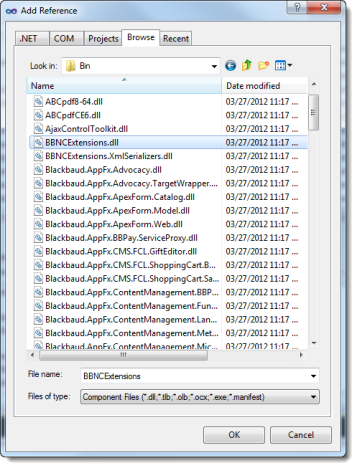

Note To create custom framework parts, you also need access to Custom parts in Blackbaud Internet Solutions, the ability to create part types, parts, and to add parts to a page. Knowledge of ASP.NET, user controls, Visual Basic, HTML and JavaScript is required. You also need access to upload the custom framework parts files to the server which hosts Blackbaud Internet Solutions.
To define a custom part, you create two standard ASP.NET (.ascx) user controls. You create an Editor Control to edit the content for the part, and you create a Display Control to render that content on a web page.

Each user control is derived from a corresponding base class in the BBNCExtensions.dll assembly in the \bin folder of your installation directory. Each control inherits the API and Content properties that provide full access to the API and the content stored for your part.
The Editor Control creates a user interface in Blackbaud Internet Solutions to edit the part’s content, while the Display Control provides the code and markup to render the content on a web page. While the Blackbaud Internet Solutions framework offers the correct user control at the correct time, it is up to your user controls to share common knowledge about the type of content that they edit, store, and render.
Note The framework handles persisting simple content and providing it to each control when it is needed. This allows you to focus on custom functionality and leave the mechanics to the platform. However, if you include complex content from other systems or content that references other Blackbaud Internet Solutions (BBIS) tables, it is up to you to code the controls to manage the storage and retrieval of that content.
Blackbaud Internet Solutions and your custom parts are built on the Microsoft ASP.NET platform, so your custom parts can take advantage of a wealth of standard APIs and services from the .NET framework, as well as a variety third-party .NET based components.
After you create custom parts, you use the Infinity SDK to store and retrieve data. You can access existing data in BBIS through the *.WebApiClient.dlls available in the SDK. And you can create Infinity tables and CRUD processes with the SDK and then generate your own *.WebApiClient.dlls to access these tables for your custom parts.
Previously, a part’s content was a serialized object that was stored and retrieved in the database by the CMS framework. A part defined the content class which the Editor and Display controls both knew about, and the framework delivered content to each control and offered functions to save it back to the database. This old concept is still supported and can be useful in some cases, such as the HTML (FTI) part that just stores one blob of HTML and has no need for SQL joins to other tables. In the SDK item template for a part, you get the boilerplate code to support this approach automatically (see the MyContent property). You can use it or ignore it.
However, the SDK now allows you to create tables for a part’s content. You can use Infinity practices to define the table and its CRUD procedures via Infinity Specs. Then you can use the Infinity MetalWeb code generator to create strongly typed classes around these procedures. You can store and retrieve a part’s content data in exactly the same way as ANY Infinity data with the *.WebApiClient.dlls, which immediately makes your new content type part of the vast Infinity API.
You can also use both approaches, but be sure to keep foreign key references out of the serialized approach because this prohibits database level referential integrity, as well as the safe export and import of your part.
The SDK includes BBMetalWeb assemblies for all CRM catalogs that are easily called using standard syntax from any web client app. To use BBMetalWeb assemblies in your parts project:
NetCommunity communicates with The Raiser’s Edge through a web service located near the Raiser’s Edge database. This web service is how NetCommunity retrieves all CRM data from The Raiser’s Edge, including constituents, funds, code tables, queries, and much more.
When we developed Blackbaud Internet Solutions as the Infinity version of NetCommunity, we created a service with an identical interface to communicate with Blackbaud CRM. The service fools Blackbaud Internet Solutions into thinking it is communicating with The Raiser’s Edge so that it will work as expected. The abstraction layer paid off in getting us to an Infinity version of NetCommunity in record time. In Blackbaud CRM, this service is referenced on the Web servicestab in Sites & settings.

Should you use this web service to get CRM data to and from your custom parts? Or should you use the vast array of Infinity APIs to access whatever you want? Either technique works, but here are key points to consider. As a rule of thumb, never call the service directly. The CMS framework wraps access to this service in cases where it would be advantageous for you to use, such as:
A relatively small subset of data is available through the service. You can extend the service with the API, but that only makes sense for a Raiser’s Edge installation that does not have Infinity’s rich, web-based CRM API.
Another important point about built-in CRM integration relates to record IDs. In The Raiser’s Edge, IDs (primary keys) are integers, but in Infinity, they are GUIDs. For the Blackbaud Internet Solutions version of the web service, we introduced an integer-GUID mapping concept for all Infinity tables accessed by the service. Otherwise, we would have had to change a TON of code to support GUIDs as keys to back office records, and it would no longer have worked for NetCommunity and The Raiser’s Edge.
For example, when the CMS Donation Form part stores IDs for CRM funds to include in the form, it stores them as integers. For the most part, this integer-GUID mapping is transparent and only relevant when you use the service to get CRM data, especially if you mix and match approaches. It’s also important to know that certain API functions such as recording a donation expect integers for back office IDs (such as the designation and fund IDs on a donation). If you get designations from the service, you already have the integers. But if you get the IDs yourself, you have GUIDs and need to look up the integer-GUID mapping yourself to create an API donation transaction.
As originally designed for The Raiser’s Edge, Blackbaud NetCommunity collects transactions for user sign-ups, constituent profile updates, donations, memberships, event registrations, and volunteering. These transactions are delivered to the CRM in a holding pen where users can review and approve them before importing the transactions into the CRM.
Only user signups, profile updates, and donations are supported in the API.
This support allows custom parts to capture these transactions and use the built-in web service to deliver them to Blackbaud CRM, where they benefit from the same review process. These transactions are also supported in Blackbaud Internet Solutions, and the BBIS-Donation-Transactions repo shows a donation form in action. The donations API is particularly powerful because it also handles the clearing of credit cards, emailing of acknowledgements, and creation of donation transactions for download.
If you need to go outside the box, the transaction delivery pipe is not available, and you must find your own route to record your transaction in Blackbaud CRM. You can record transactions directly to the database with WebApiClient.dll wrappers, or you can create your own holding pen with a user interface to review and approve transactions in Blackbaud CRM.
For debugging, attach Visual Studio to all running w3wp processes and set the breakpoints you want.
The SDK includes a project template to create a CMS Parts Project. The Parts project template creates an empty project with a reference the BBNCExtensions assembly, which is your key to the custom parts universe.
This Part template creates the scaffold of a CMS part that consists of three project items.
To deploy the custom part to your website, you must copy its files to the appropriate folders on your web server and then add the part to the Custom parts gallery in Administration. You can configure post-build events in to copy the files.
Warning These steps require Visual Studio and the Infinity SDK. For more information about how to create a developer environment, see Development Environment.
Note Subsequent tasks may require Administrator rights to folders on your developer machine. If you do not have Administrator rights enabled by default, you may have to run Visual Studio as an Administrator.

Custom parts are comprised of two ASP.NET user controls. It is assumed that the machine where you create custom parts has Blackbaud Internet Solutions installed along with IIS and Visual Studio 2008 or 2010 for the development environment.
The content for custom parts can come from a variety of sources. Content can be as simple as text or HTML stored in the BBIS database, or it can be data from the back office such as constituent giving history in Blackbaud CRM. Custom parts store content in the BBIS database, whether it’s the actual content or just the location of the content. Custom parts also store any design options for display or behavior in the database. Depending on the content, the Editor Control offers a place to edit the content or parameters to locate remote content. The Editor Control also allows users to edit design-time settings properties for display and behavior.
A custom part also has a code-behind DLL assembly. This is where the part’s executable code lives for all of its associated user controls. This is a common ASP.NET practice.
To install a custom part, you place all non-compiled files (.ascx files, images files, .js files, etc.) in the \NetCommunity\Custom folder of your installation directory. We recommend that you create subfolders in the \NetCommunity\Custom folder for each of your custom parts. In addition, you place all compiled files (your code behind DLL) and required references (.dll) in the \NetCommunity\bin folder.
Note If you do not have a \Custom folder in the \NetCommunity folder for your installation directory, you must create one.
After your files are in place, you can add custom parts to Blackbaud Internet Solutions from the Custom parts gallery in Administration. After this, the part is ready for use.
Tip Sometimes part types are referred to as parts. But parts are instances of part types. Custom parts are actually custom part types. You can create a part based on a custom part (type).


Note For more complex custom parts, you can add commands to copy related files such as images, scripts, and style sheets.
Right-click the project and select Build. A successful build should look like this in the Output window:
------ Build started: Project: PartsProjectExample, Configuration: Debug Any CPU ------
PartsProjectExample -> C:\Users\TomTr\Documents\Visual Studio 2010\Projects\PartsProjectExample\PartsProjectExample\bin\PartsProjectExample.dll
C:\Users\TomTr\Documents\Visual Studio 2010\Projects\PartsProjectExample\PartsProjectExample\PartExampleDisplay.ascx
C:\Users\TomTr\Documents\Visual Studio 2010\Projects\PartsProjectExample\PartsProjectExample\PartExampleEditor.ascx
2 File(s) copied
C:\Users\TomTr\Documents\Visual Studio 2010\Projects\PartsProjectExample\PartsProjectExample\bin\PartsProjectExample.dll
C:\Users\TomTr\Documents\Visual Studio 2010\Projects\PartsProjectExample\PartsProjectExample\bin\PartsProjectExample.pdb
C:\Users\TomTr\Documents\Visual Studio 2010\Projects\PartsProjectExample\PartsProjectExample\bin\PartsProjectExample.xml
3 File(s) copied
========== Build: 1 succeeded or up-to-date, 0 failed, 0 skipped ==========
Without Administrator rights, the output will look something like this:
------ Build started: Project: PartsProjectExample, Configuration: Debug Any CPU ------
PartsProjectExample -> C:\Users\TomTr\Documents\Visual Studio 2010\Projects\PartsProjectExample\PartsProjectExample\bin\PartsProjectExample.dll
C:\Users\TomTr\Documents\Visual Studio 2010\Projects\PartsProjectExample\PartsProjectExample\PartExampleDisplay.ascx
Access denied
C:\Users\TomTr\Documents\Visual Studio 2010\Projects\PartsProjectExample\PartsProjectExample\bin\PartsProjectExample.dll
Access denied
c:\Windows\Microsoft.NET\Framework\v4.0.30319\Microsoft.Common.targets(3717,9): error MSB3073: The command "xcopy "C:\Users\TomTr\Documents\Visual Studio 2010\Projects\PartsProjectExample\PartsProjectExample\*.ascx" "C:\Program Files\Blackbaud\NetCommunity\Custom\PartsProjectExample" /s /I /y
c:\Windows\Microsoft.NET\Framework\v4.0.30319\Microsoft.Common.targets(3717,9): error MSB3073: xcopy "C:\Users\TomTr\Documents\Visual Studio 2010\Projects\PartsProjectExample\PartsProjectExample\bin\PartsProjectExample.*" "C:\Program Files\Blackbaud\NetCommunity\Bin\" /y" exited with code 4.
========== Build: 0 succeeded or up-to-date, 1 failed, 0 skipped ==========


In Display Control Source, enter the path to the ASP.NET display user interface (ASCX file) that the post-build events copied to the BBIS installation. For example: Custom/PartsProjectExample/PartExampleDisplay.ascx.
Warning Enter a virtual path. Otherwise, you will get an error message like this:

Tip Sometimes part types are referred to as parts. But parts are instances of part types. Custom parts are actually custom part types. You can create a part based on a custom part (type).


Click Next. A tabbed set of options appears. You can adjust those as necessary. For more information, see Website Design Guide.
Warning If the version of the reference to BBNCExtensions.dll in your parts project does not match the version of the BBNCExtensions.dll used the compiler (BBIS), you may get an error like this:

To correct this error, you can change the reference in your parts project to the copy of the DLL used by the compiler (BBIS). For more information, continue to the next section.
Select the existing reference to BBNCExtensions.dll and click Remove.

Click Add. The Add Reference screen appears.

Click the Browse tab. Browse to BBNCExtensions.dll in the BBIS installation. For example: C:\Program Files\Blackbaud\NetCommunity\Bin\BBNCExtensions.dll.
